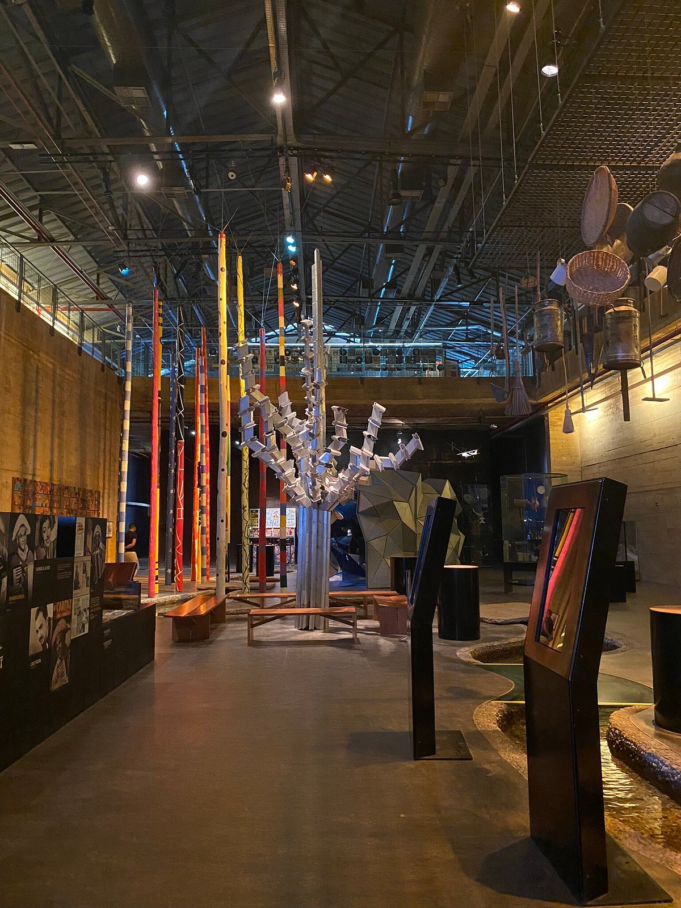

Elevadores
Data de verificação:

O Instituto Ricardo Brennand, também conhecido como Castelo de Brennand, é uma instituição cultural brasileira sem fins lucrativos localizada na cidade do Recife, capital do estado de Pernambuco.


domingo 13:00–17:00 | segunda-feira Fechado
terça-feira 13:00–17:00 | quarta-feira 13:00–17:00
quinta-feira 13:00–17:00 | sexta-feira 13:00–17:00
sábado 13:00–17:00
Telefone: (81) 2121-0365
De terça-feira a domingo
Inteira: R$ 60,00 | Meia: R$ 30,00
Visita Jardim Capela
Inteira: R$ 30,00 | Meia: R$ 15,00
Visita Museu + Jardim Capela
Inteira: R$ 80,00 | Meia: R$ 40,00
Data de verificação:
Data de verificação:
Data de verificação:
Endereço: Alameda Antônio Brennand, s/n, Várzea,
Recife – PE, CEP 50741-904
Valeu muito a pena a visita, com certeza voltarei.
Com certeza um dos meus pontos turísticos favoritos do Recife


